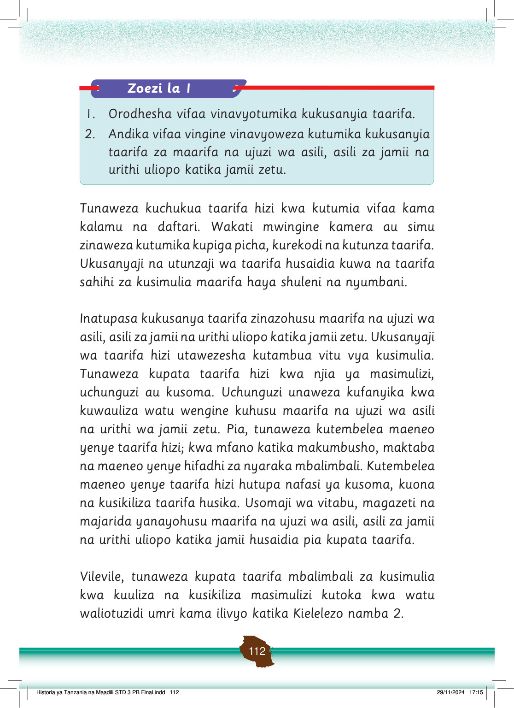

Zoezi la 1
1.
Orodhesha vifaa vinavyotumika kukusanyia taarifa.
2.
Andika vifaa vingine vinavyoweza kutumika kukusanyia taarifa za maarifa na ujuzi wa asili, asili za jamii na urithi uliopo katika jamii zetu.
Tunaweza kuchukua taarifa hizi kwa kutumia vifaa kama kalamu na daftari.
Wakati mwingine kamera au simu zinaweza kutumika kupiga picha, kurekodi na kutunza taarifa.
Ukusanyaji na utunzaji wa taarifa husaidia kuwa na taarifa sahihi za kusimulia maarifa haya shuleni na nyumbani.
Inatupasa kukusanya taarifa zinazohusu maarifa na ujuzi wa asili, asili za jamii na urithi uliopo katika jamii zetu.
Ukusanyaji wa taarifa hizi utawezesha kutambua vitu vya kusimulia.
Tunaweza kupata taarifa hizi kwa njia ya masimulizi, uchunguzi au kusoma.
Uchunguzi unaweza kufanyika kwa kuwauliza watu wengine kuhusu maarifa na ujuzi wa asili na urithi wa jamii zetu.
Pia, tunaweza kutembelea maeneo yenye taarifa hizi; kwa mfano katika makumbusho, maktaba na maeneo yenye hifadhi za nyaraka mbalimbali.
Kutembelea maeneo yenye taarifa hizi hutupa nafasi ya kusoma, kuona na kusikiliza taarifa husika.
Usomaji wa vitabu, magazeti na majarida yanayohusu maarifa na ujuzi wa asili, asili za jamii na urithi uliopo katika jamii husaidia pia kupata taarifa.
Vilevile, tunaweza kupata taarifa mbalimbali za kusimulia kwa kuuliza na kusikiliza masimulizi kutoka kwa watu waliotuzidi umri kama ilivyo katika Kielelezo namba 2.